Attention
This presentation is not about success stories. It’s about failures – the mistakes and wrong turns that, in the end, made success possible.
We often like to hear about other people’s failures, and that’s fine, because they can teach us something.
Still, it’s always smarter to learn from someone else’s mistakes than to make them all yourself.
That’s why I want to share some of my own failures with you – so you can avoid them on your own path.
TL;DR
The choice of programming language has little impact on creating efficient software. The most critical factor is a deep understanding of your data.
Only by knowing your data can you select the appropriate infrastructure and then, finally, the right high-performance algorithms.
Agenda
- WHOAMI
- The Project
- The Stack
- PHP
- Queues
- Cache
- Mongo
- Q&A
WHOAMI --env=live
- Proud Husband and Father of Two Daughters
- Run a small farm Hałaśliwa Zagroda
- Farm animals: horse, donkeys, goats, sheep, pigs, ducks, geese, chickens,
guinea fowl; domestic: dogs, cats, fish
- We produce goat cheese and sell eggs, organize school trips, birthday parties for children
- Passion for Woodworking
- Enjoy Welding Projects
- Love for Classic Vehicles
- Youtuber
WHOAMI --env=dev
- Professionally coding in PHP since 2007
- Symfony from version 1.0
- Explored Slim and Zend frameworks.
- Workerman/Webman i (Open)Swoole
- Hobby
- C/C++ embedded, ESP-01/12, Arduino
- Golang - tooling, PHP + Golang
- Small DevOps
- CI/CD, Docker, Systems Architecture
- Open Source contributor
- Engineering mindset over pure theory
The goal of the project was to replace the existing external product recommendation system with our own
solution.
The main reasons were the high costs and the lack of flexibility of the current system.
RECS.IO
- 3 Backend developers
- 1 Frontend developers
- 1 Tester
- PO, Scrum Master, Engineering Manager
Assumptions
- 3 months to MVP
- Monthly cost: ~2000 euro
- Performance: 1000 req/s
Assumptions
- 3 months to MVP
- Monthly cost: ~2000 euro
- Performance:
1000 req/s 1600 req/s
- Response time < 200ms
Assumptions
- 3 months to MVP ❌
- Monthly cost: ~2000 euro ✅
- Performance:
1000 req/s 1600 req/s ✅
- Response time < 200ms ✅
The Stack
Backend
- Programing language: PHP
- Framework: Symfony 7.3
- Database: MongoDB
8.07.0
- Cache: Redis
- Queues: Kafka, Rabbitmq
- Platform: K8s - OpenShift
- Cloud: GCP, Azure,
AWS
The Stack
Frontend
- Frontend: 15kb React js file (5x - for each brand)
- Mobile: 10 mobile apps (5 Android, 5 Iphone)
The Stack
- 5 different brands, vary in size
- Each have own k8s namespace, own database, cache, etc
- But it can be run as a multi-tenant application
- All k8s configuration owned by Recs.io
- CI/CD - ArgoCD, owned by Recs.io
- Whole stack can be run locally using k3d
- Including CI/CD🤪
- Monitoring: Prometheus, Grafana, NewRelic, PMM
PHP Application
- Classic configuration Nginx + PHP-FPM + NewRelic
- Alpine-based docker image
- PHP 8.4 - from packages
- FPM
pm.static with 20 workers
- Separate container for Nginx, PHP-FPM, NewRelic
PHP Application
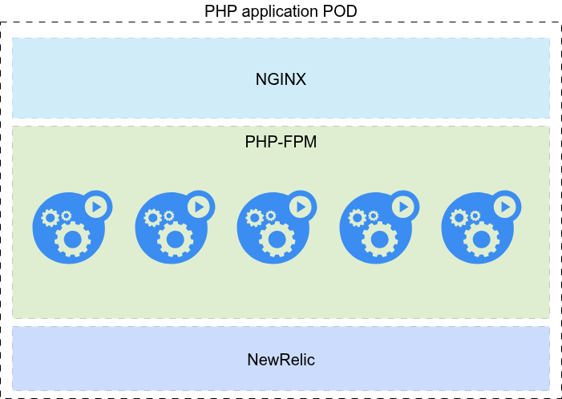
NewRelic - Problem 1
- Sometimes it took more than 30s for NewRelic agent to accept data
- This cause readiness probes to fail
- It was easy to fix with
newrelic.daemon.app_connect_timeout=0s
- Copy-pasted from others config
NewRelic - Problem 2
Process 42 (version 11.10.0.24) received signal 11: segmentation violation
process id 1 fatal signal (SIGSEGV, SIGFPE, SIGILL, SIGBUS, ...)
- stack dump follows (code=0x7fae61df2000 bss=0x7fae61f0eb2c):
No backtrace on this platform.
PHP execution trace follows...
2025-07-29 06:39:08.922 +0000 (44 44) error: parse preamble failure: invalid format: 0
2025-07-29 06:39:08.922 +0000 (44 44) error: APPINFO failure: len=7356 errno=EISCONN
[29-Jul-2025 06:39:09] WARNING: [pool www] child 42 exited on signal 11 (SIGSEGV - core dumped)
after 8.668780 seconds from start
[29-Jul-2025 06:39:09] NOTICE: [pool www] child 91 started
NewRelic - Problem 2
- There was 40% chance that this will happen
- The FPM child process was restarted and work well
- With little traffic, there were no visible problems
- Apart from increased memory usage
- Problems began when the load on the server increased
NewRelic - Problem 2
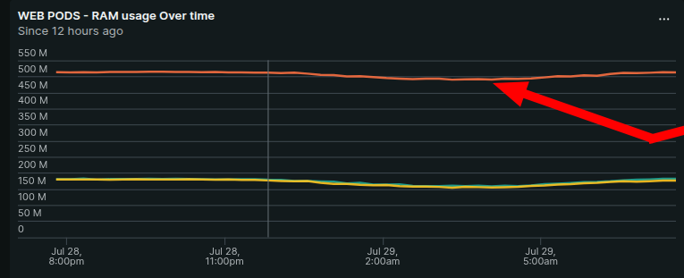
NewRelic - Problem 2
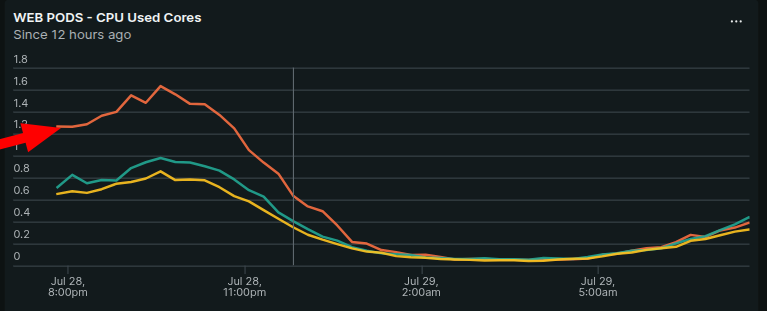
NewRelic - Problem 2
- Partial fix number 1
- Disable newrelic for PHP scripts in entrypoint.sh
- Reduced chance of SIGSEGV by 50%
- Done by adding special NEWRELIC_ENABLED variable in php.ini file
newrelic.enabled = ${NEWRELIC_ENABLED}
NewRelic - Problem 2
- Hot-fix - disable
opcache.preload
- Similar problem was already reported on github #19125
- Not a option for us - lower performance
NewRelic - Problem 2
- Partial fix number 2
- Disable NewRelic sidecar container
- Run NewRelic agent inside PHP-FPM container
- Reduce 90% of SIGSEGV
- But the problem was still occurring
- Finial solution latter
newrelic.daemon.dont_launch = 0
fun fact
Impact of NewRelic on PHP CPU load
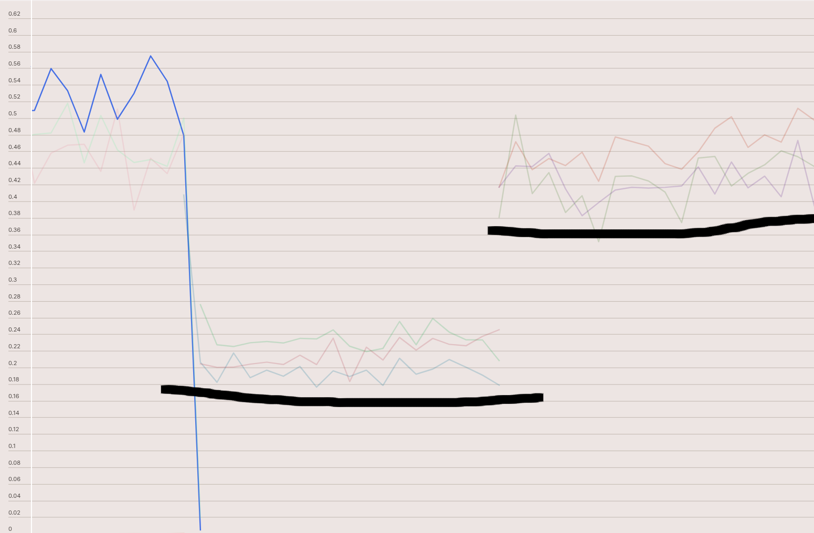
fun fact
Impact of NewRelic on response time
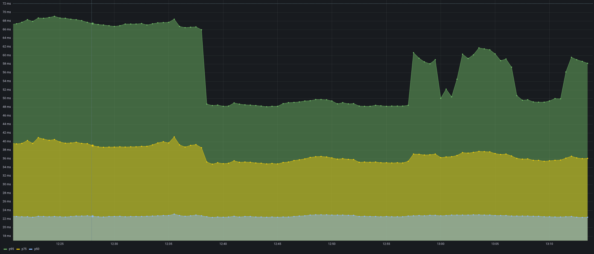
Scaling application
- Available Options
- Based on CPU
- Based on Request per second
- Custom metrics using KEDA
- Of course, we chose the custom metrics option
Scaling application
(Dis)advantages of CPU base scaling
- It is straightforward to implement
- It works with a cpu-based load
- It does not work with a high IO-based load
- Example: It will not scale on high network latency
Scaling application
(Dis)advantages of RPS base scaling
- It is straightforward to implement
- It works if you have stable response times
- All endpoints should have similar response times
- It will not scale on high network latency
Scaling application
We choose to use active PHP-FPM workers as a scaling metric
- It is a little harder to implement
- pm=static and pm.start_servers=20
- If avg active worker > 15 scale up
- We test this on local k8s cluster using wrk and ab
- It works well, with small number of connection
- On lots of connection it created a scale bomb 💣
- Unfortunately, we only discovered this in the production environment
Scaling application
The PHP-FPM counting connection problem
- PHP-FPM has a problem with counting active processes
- Example: It could return 3347 when pm.max_children=20
- After two days of investigation, we found the bug
- It only happens when fastcgi_keep_conn on directive in the nginx
- Hot-fix: disable this line in config
- Report bug to PHP: https://github.com/php/php-src/issues/14212
Scaling application
Tuning pod size and scaling params
- We started with 20 workers on MVP
- It was good when we had response times about 100ms
one worker: 1/100ms = 10 req/s
max per pod: 20 workers * 10 req/s = 200 req/s
scaling up: 15 workers * 10 req/s = 150 req/s
1600 req/s / 150 req/s ~= 12 pods
We made some optimization to code and data structures
Response time went down to 30-40ms
And then...
Kubernetes tango down
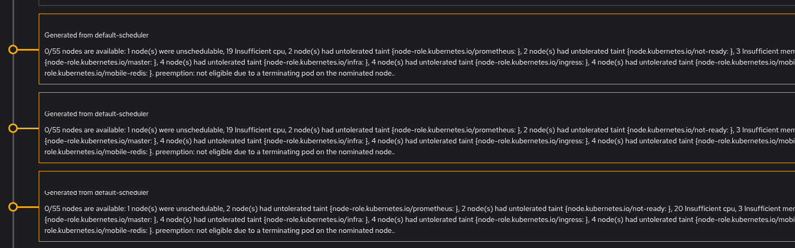
Kubernetes tango down
- We lost all of our redis instances
- 2 of 3 mongodb node were down
- Only one app pod was serving traffic
- Despite heavy injuries, Recsio was still alive.
- What doesn’t kill us makes us stronger.
- When the dust settled, our app started running faster.
Kubernetes tango down
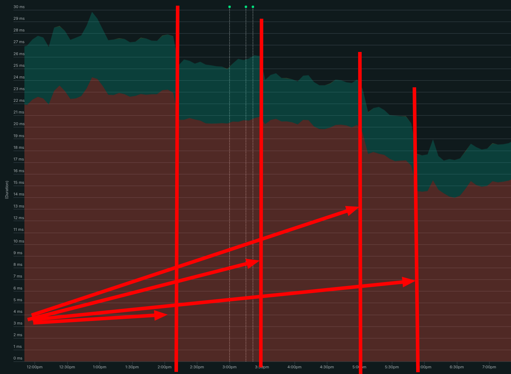
Scaling application
New response times changed everything
- New response times were ~15ms
- 20 workers on one pod was waaaay to much
one worker: 1/15ms ~= 65 req/s
max per pod: 20 workers * 65 req/s = 1300 req/s
scaling up: 15 workers * 10 req/s = 950 req/s
1600 req/s / 950 req/s ~= 2 pods
In theory, we don’t need to scale at all.
The HA requirements already assumed at least 2 pods.
But there’s a catch...
Scaling application
Setting CPU requests and limits
- 1/3 is IO (redis and mognodb) 2/3 is PHP
- We need to do some math again.
15 workers * 0.667 ~= 10 cores
It will be hard to allocate that many resources on a crowded node.
In case of failure, the remaining pod will get a lot of traffic.
And the problem of unused resources...
Cat Head Problem
- Two peaks: one in the morning, bigger one in the evening.
- Medium traffic during the day.
- Minimal traffic during night hours.
- The difference between the lowest traffic and the peak is 75x.
- We don’t want to pay for 20 cores at night.
- That’s why we had to do the math again...
Cat Head Problem
- For 6 hours during the day, we have very low traffic.
- We want to pay as little as possible during this period.
- We also want to scale very quickly to meet traffic demands.
- We need a reserve in case of a failure.
- Or in case of a sudden traffic surge.
- So we came up with this...
Cat Head Problem
#php-fpm.conf
pm = dynamic
pm.start_servers = 3
pm.max_children = 20
#deployment.yaml
resources:
limits:
memory: 164Mi
requests:
memory: 128Mi
cpu: 300m
Cat Head Problem
- Each pod serves around 20 req/s before scaling up.
- At night, we only have two pods.
- At peak load, we expect to have around 80 pods.
- Large reserve - in theory, one pod can handle traffic up to ~200 req/s.
- Losing even a few pods is not a problem.
- The application looks more robust when it has many pods.
- And we created a pixel-art cat...
Back to NewRelic - Problem 2
- Since changing the PHP-FPM parameters the problem has disappeared
- SIGSEGV errors usually appeared on final 15+ workers.
- Since we only run 3 workers by default, the problem has not recurred.
The queue
The only way we feed the app
The only way we feed the app
- Two queue systems: Kafka and RabbitMQ
- Kafka holds the product data
- Morning burst: about 5M messages
- Then during the day: about 2–3M messages
- RabbitMQ holds product recommendation data
- Morning burst: about 3-4M messages
- Later - nothing
The only way we feed the app
- For the kafka queue, we have about 1–1.5 hours to process
- That gives about 1000 messages per second
- Dataset: 100+ GB per day (biggest brand 750+ GB)
- For the rabbit queue, we have about 1 hour to process
- That gives about ~1100 messages per second
- Dataset: 15GB per day (now 25GB)
Chasing a rabbit
- Rabbit HA configuration
- Cluster - 3 nodes
- 5 - cluster queues, 3 replicas each
- Ram: 1GB
- Storage: 16GB PVC(pd-ssd)
Chasing a rabbit
- Initial test dump
- 1/30 of all data (one market for one brand)
- Seamlessly completed, took only seconds.
- I loaded the data 30 times on a local cluster.
- Took under a minute, also problem-free.
Chasing a rabbit
- Initial real dump
- 15GB of recommendation
- Took under a minute
- But it also took down all RabbitMQ nodes.
- They all crashed due to OOM.
- Increased RAM to 2GB... same result.
- The problem was with PVC performance.
Chasing a rabbit
- We could have kept increasing the RAM...
- But our rabbits only run for 1 hour a day.
- Instead of paying for more RAM, it's better to find another solution.
- sleep(1) to the rescue.
- We added a sleep(1) after every 5k messages.
- Sometimes the simplest things work best.
Chasing a rabbit
- Symfony messenger amqp client is very slow
- Inefficiencies of constant polling with get()
- With empty handler, we were able to get up 200msg/s
- With database writes max what we could get 120msg/s
- Adding more consumers didn’t boost performance
- It only added more traffic to RabbitMQ
- First try: planned 1 hour, but it took 6
Chasing a rabbit
- Switch amqp client to jwage/phpamqplib-messenger
- It’s not a drop-in replacement
- It allows using consume and prefetch features
- Not perfect: you still have to ack every message
- We managed to reach about 250 msg/s
- Now the database became a bottleneck
Chasing a rabbit
Symfony messenger batch processing - game changer
class BatchHandler implements BatchHandlerInterface {
use BatchHandlerTrait;
public function __invoke(Message $message, Acknowledger $ack = null): mixed {
return $this->handle($message, $ack);
}
private function process(array $jobs): void {
foreach ($jobs as [$message, $ack]) {
// ... some code
$ack->ack($result);
}
}
}
Chasing a rabbit
Symfony messenger batch processing - game changer
- BatchHandlerInterface does not speed up processing
- Instead, it allows for the use of bulkWrite in MongoDB.
- This significantly reduces traffic between the consumer and the database.
- Allows ordered=false for parallel writes.
- Also added w=1&journal=false for all consumer.
- We achieved around 450 msg/s.
- With 3 consumers, we achieved the desired performance.
Know your data!
Setting journal=false is not recommended for critical data. However, in our use case, we can rebuild the data very quickly.
It is not a critical issue if a customer temporarily sees recommendations in a different order.
Setting ordered=false means that queries in a batch are executed in a random order. This can lead to unpredictable results.
In our case, messages in the queue never refer to the same records. This way, we don’t have any problems with data being overwritten in the wrong order.
Know your data!
Setting w=1 is not recommended if you can't afford replication lag.
In our case, the fact that the data on the secondary would appear in a few seconds didn't matter.
Chasing a rabbit
- Scaling rabbitmq consumers
- We want to scale to zero, when no messages
- Scaling must be independent for all 5 queues
- Can't use cron, we don't know when we get messages
- We decided to use KEDA - Kubernetes Event-driven Autoscaler.
- Meets all our requirements
- Easy to set up
- It also supports Kafka
Chasing a rabbit
Example configuration
apiVersion: keda.sh/v1alpha1
kind: ScaledObject
spec:
maxReplicaCount: 10
minReplicaCount: 0
scaleTargetRef:
apiVersion: apps/v1
kind: Deployment
name: product-vectors-consumer
triggers:
metadata:
mode: QueueLength
protocol: amqp
queueName: product_vectors
value: "5000"
type: rabbitmq
Chasing a rabbit
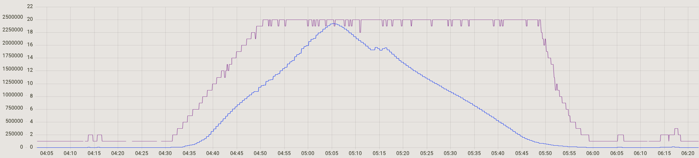
Chasing a rabbit
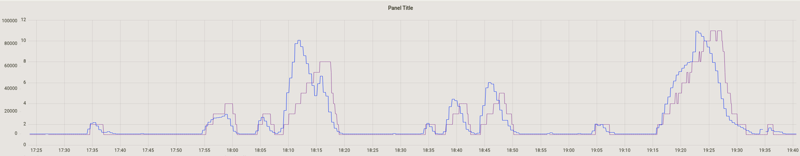
Chasing a rabbit
- Another problem we encountered was high CPU load in idle.
- A load of 400 millicore (40% CPU) is unusual for an idle state
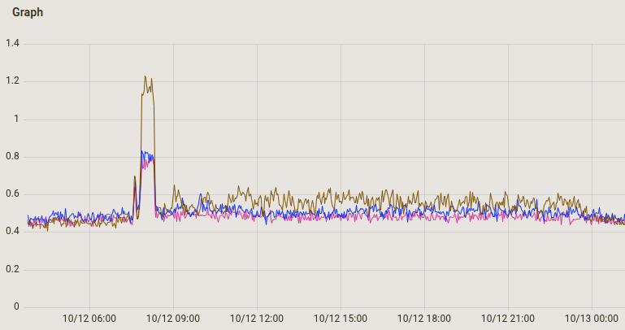
Chasing a rabbit
- There was no information in the logs as to what could have caused this condition.
- The first idea was to download metrics too often.
- However, even disabling them did not change much.
- We searched the web and found this error
https://github.com/bitnami/charts/issues/11116
- What cases high CPU usage is CLI tools: rabbitmq-diagnostics in liveness and
readiness probes.
- After changing the way liveness and readiness are checked, CPU usage is back to
normal.
Chasing a rabbit
Configuration to fix high CPU usage in rabbitmq
rabbitmq:
customReadinessProbe:
tcpSocket:
port: amqp
customLivenessProbe:
tcpSocket:
port: amqp
Chasing a rabbit
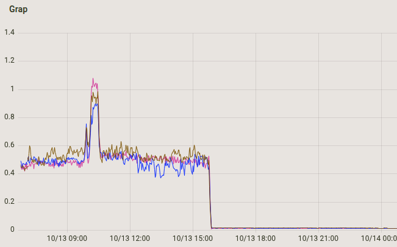
bitter taste of kafka
- Kafka configuration
- Product queue - 32 partition, 3 replicas
- About 19 hours of data
- Managed by another team
bitter taste of kafka
- Same issue as with rabbitmq - reading message one by one is slow
- We noticed that a large portion of the messages are static.
- Probably archival products?
- So, we decided to skip them during updates.
- We only save if our updatedAt is less than the message's.
- I was implemented, but there was a bug: >= instead of >
- It reduced the number of database writes by over 50%.
bitter taste of kafka
Know your data!!!
"material": "100% SILIKON",
"publicationDate": "2025-02-06",
"updatedAt": "2025-05-28T09:33:34", // this is not last update date
"sizes": [{
"stock": true,
"sizeId": 1041,
For two weeks, we did not update most products.
bitter taste of kafka
- We achieved the desired speed with about 20 consumers
- The number of partitions should be divisible by the number of consumers.
- Otherwise, some partitions will be consumed faster than others.
- However, 32 consumers caused database overload.
- 16 consumers didn't provide adequate speed.
- KEDA leaves consumers that do nothing.
bitter taste of kafka
- Incorrectly selected number of consumers.
- Combined with an incorrectly selected partitioning key
- Leads to a situation where, despite a large number of consumers, the processing speed is slow at the end of the queue.
bitter taste of kafka
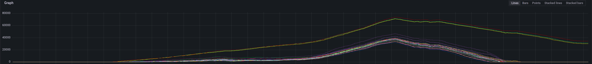
bitter taste of kafka
- In this case, most consumers had assigned only 2 partitions
- These consumers finished their job much faster.
- The consumer assigned three partitions struggled with the task.
- Because there were still over 120,000 messages in the queue.
- KEDA maintained the maximum number of consumers.
- Of which, only one was doing job.
bitter taste of kafka
- How to deal with such a problem
- Kafka rebalances when a client joins or disconnects.
- You can restart the client every few minutes or every few messages.
- However, frequent restarts can cause Kubernetes to add a back-off period.
- However, frequent restarts can cause Kubernetes to add a back-off period.
- Fortunately, KEDA has built-in options for monitoring the number of active partitions.
bitter taste of kafka
triggers:
- type: kafka
metadata:
bootstrapServers: 'kafka'
consumerGroup: 'recsio'
topic: 'products'
# number of replicas will not exceed zero-lag partitions
limitToPartitionsWithLag: 'true'
Cache
Redis client selection
Redis client selection
- Master-slave replication
- Automatic read-write separation
- Must work with symfony cache
- phpRedis is superfast...
- but only support read-write separation for cluster
- So we chose predis support read-write separation for master-slave
Wrong way to make cache
In the initial phase of our application, we had two problematic queries that took 90% of the time of all
queries
- The first was a query of the type
IN(id1, ... id200)
- The second involved selecting approximately 1,500 products based on a complex
filter.
- Each of these queries took 10-30 milliseconds.
- We could cache results for about 5 minutes.
- But this solution wasn't optimal.
Wrong way to make cache
- Store offers approximately 4.5 million products.
- The cache size exploded, and there were large number of evictions.
- The hit/miss ratio was terrible.
- For popular products, the speedup was indeed noticeable.
- However, for most products, implementing the cache caused a slowdown.
- Cache miss -> database query -> cache store
Know your data!
After analyzing the data, it turned out that instead of maintaining a cache for individual products, we
could recalculate the necessary data for entire product groups.
This gave us some hope; the only thing left to do was to see if we could perform these recalculations
quickly enough.
Cache done right
- For each store we keep about 80 keys
- For brand its about 2000 keys
- The entire cache takes 25MB RAM / 12,5kb per key
- It takes 13 seconds to generate cache
- We fetch two keys per request
- Depending on the product, the cache is an array containing approximately 100 -
10,000 entries
- To reduce decoding time and data volume, we used igbinary
- This decision caused problems...
Cache done right
- Despite 100% coverage of the problematic queries, they still sometimes executed.
- It turned out that the cache was not generated for larger tables.
- Symfony cache does not throw exceptions if the cache fails to be written.
- After a little investigation, it turned out that we can't save arrays larger than
3338 entries.
- Later, it turned out that larger arrays can be saved.
- An array can't be saved if it has a key "3338"
The Hidden Magic of Number 3338
- Why array key 3338 is problematic
- 3338 in hex is
0D 0A
-
0D => 015
in ASCII is Carriage Return (\r)
-
0A => 012
in ASCII is Line Feed (\n)
- predis use
\r\n
as command separator in pipeline
- Reported: https://github.com/predis/predis/issues/1574
- Fixed not released yet.
Cache done right - but we can do better
- We can do it better because the cache size is only 25MB
- So the entire cache will easily fit in the APC
- The only problem is that we cannot save the cache to APC within the cron command.
- We can use Symfony Chain Cache Adapter for this
- And use redis only to distribute keys to application pods
- This solution worked incredibly well
- Even a little too well...
When hallucinations hit production
Do you see an error in this configuration? This configuration compiles but doesn't work correctly?
pools:
recommendation.cache:
adapters:
- {name: cache.adapter.apcu, default_lifetime: 60}
- {name: cache.adapter.redis, default_lifetime: 300}
Valid one:
pools:
recommendation.cache:
adapters:
- {name: cache.adapter.apcu}
- {name: cache.adapter.redis}
default_lifetime: 60
Cache done better
- This bug remained in production unnoticed for almost two weeks.
- Causing a gradual degradation of recommendation scores.
- Lesson learned: never trust AI.
- Currently, after fixing the bug, Redis has minimal traffic.
- We may completely stop using Redis for caching.
Cache problems continue
- At first it seemed like everything was working.
- But after a few hours of operation, errors started appearing again.
- This time the APC cache reported that it could not save the key.
Failed to save key "valid_skus_v1|xxxxxxx|XXX_PL_PL|Ladies" of type array.
- The error description was very misleading, so we first looked for the error in the
code
Cache problems continue
- The error itself did not cause a significant performance drop.
- But it was clogging up the logs in Kibana.
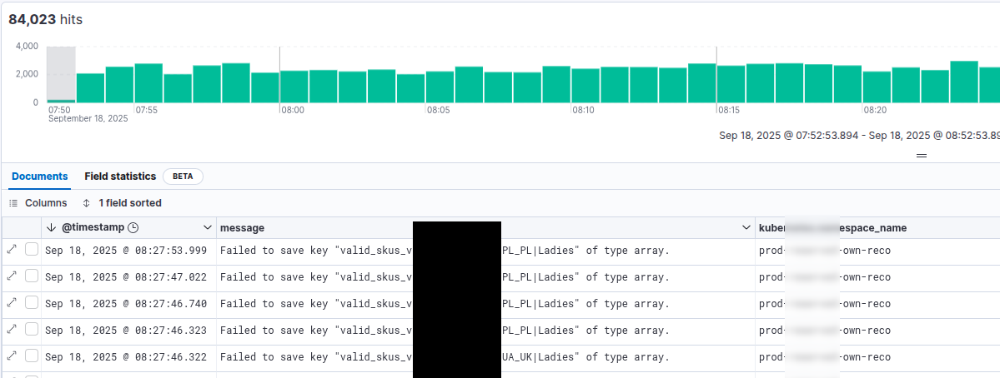
Cache problems continue
- After searching the web, it turned out to be a symptom of memory fragmentation in APC.
- The proposed solution was to increase the memory for the APC.
- We increased the memory and it helped... for an hour
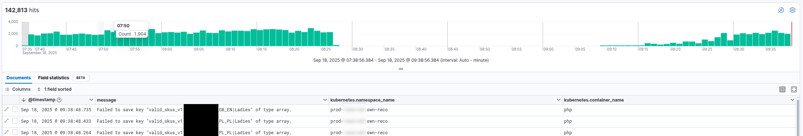
Cache problems continue
- Unfortunately, we had to dig deeper.
- Well, we found the solution, just upgrade the APC version to 5.1.25
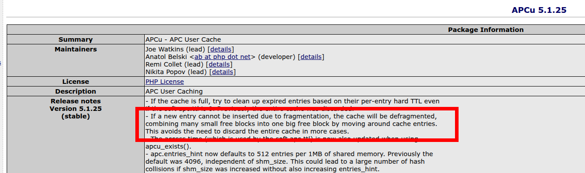
Cache problems continue
- The solution was so close, yet so far away.
- As base image we use Alpine 3.21
- There was php84-pecl-apcu package with version 5.1.24
- One option is to upgrade the alpine to 3.22, where APC was at version 5.1.27
- But this involved updating the mongodb extension to version 2.x
- And this one is not supported by Newrelic, so we would lose query monitoring
Missing metrics for mongodb
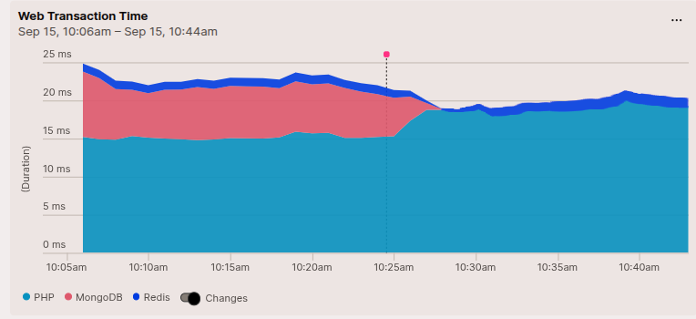
Cache problems continue
- The second option was to compile APC from the sources.
- We could have used the standard PECL/PEAR method.
- But this solution will be deprecated soon
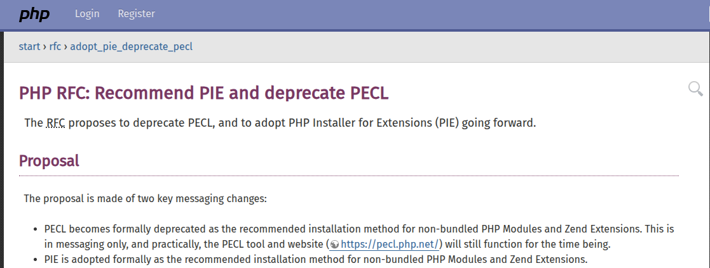
- https://wiki.php.net/rfc/deprecate_pear_recommend_composer
Cache problems continue
- That's why we decided to use PIE
- Unfortunately, Alpine does not provide pie packages.
- That's why we had to do it the old school way.
- Using docker multi-step build.
Cache problems continue
FROM alpine:3.21 AS php-ext
RUN apk add gcc g++ make autoconf libtool bison re2c pkgconf \
php84-dev php84-phar php84-iconv php84-openssl \
&& wget https://github.com/php/pie/releases/download/1.2.1/pie.phar \
&& php84 pie.phar install apcu/apcu
FROM alpine:3.21 AS base
COPY --from=php-ext /usr/lib/php84/modules/apcu.so /usr/lib/php84/modules/apcu.so
...
Cache problems continue
Ultimately, we managed to save 1ms off the average response time.
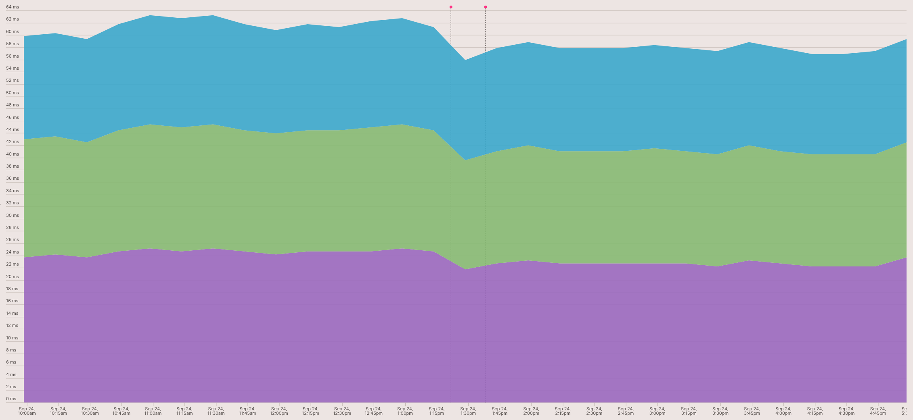
Mongo
Why we chose mongodb as the database
- We had the choice between MySQL and MongoDB.
- High performance for writes and reads for PK.
- Easy HA setup with Replicaset
- High data compression
- No schema - good for prototyping.
Mongo
- Why did we choose version 7.0 instead of 8.0?
- At first, we started with version 8.0 on dev machines.
- Then we prepared a local version on k3d to test replicasets.
- Next, we deployed it on test servers.
- Up to this point, everything worked fine with version 8.0.
- But on production servers, we had an older Mongo operator.
- This operator did not support version 8.0.
Mongo
- There was no option to quickly upgrade the operator.
- So we had to switch to version 7.0.
- It is a pity, because version 8.0 has many performance improvements.
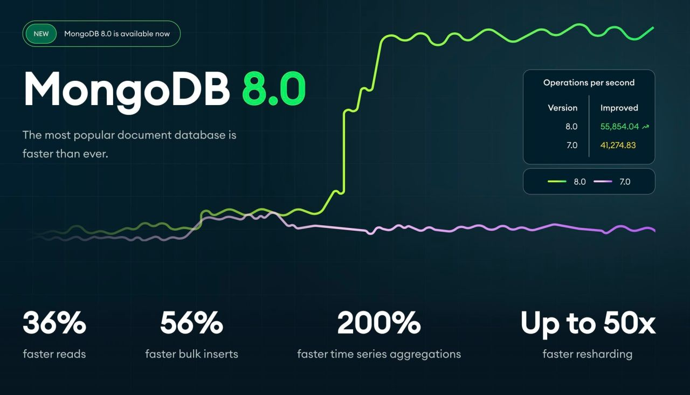
Mongo - lesson learned
Keeping everything in one collection with big documents is not a good idea
- This design is only good for simple key-value data.
- If a query is not covered by an index, reading can be very expensive.
- Even to get one field, the whole document must be read.
- With big updates, frequent relocation may happen.
- Parallel updates - you must remember about document lock.
Mongo - lesson learned
Running MongoDB in Kubernetes vs. bare metal
- Make sure Mongo runs on dedicated CPUs.
- No direct access to fast persistent disks.
- If using PVC, check performance limits.
- Example: on GCP, 32GB pd-ssd gives ~4000 IOPS and 15MB/s.
- Because of this, we had to choose a much bigger disk than we needed.
- Also remember about IOPS limits for the instance.
Mongo - lesson learned
- IOPS are not the biggest problem.
- The main issue is high latency of such disks.
- Surprisingly, read latency is higher than write latency.
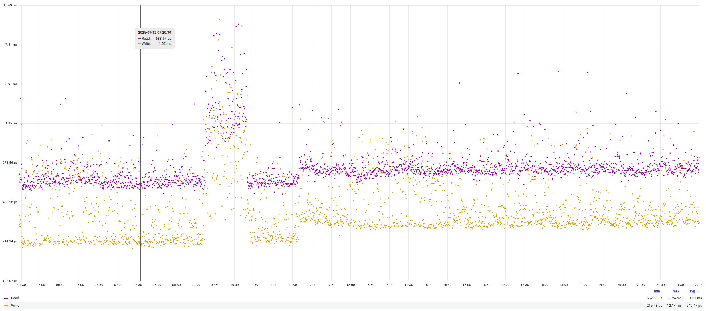
Mongo - lesson learned
- It is crucial that our dataset fits into RAM.
- But what if the dataset does not fit?
- By default, Mongo splits memory: 50% WiredTiger, 50% page cache
- bare metal: reduce WiredTiger cache, Change compression from snappy to zstd
- K8s: Increase WiredTiger to 80%. Hope the node has enough free RAM for page cache
What if the dataset does not fit RAM?
- Just reduce your data set
- Remove old data
- Use more compressed data structures
- It's usually not difficult, you just have to do it.
- In our case, 2 weeks of work was enough
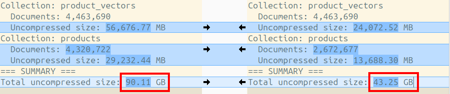
What if the dataset does not fit RAM?
- Look for free RAM in your cluster
- If your cluster is mainly composed of applications, there will definitely be a lot
of free RAM.
- Ask for more RAM. On GCP, it's 7-8 times cheaper than CPU.
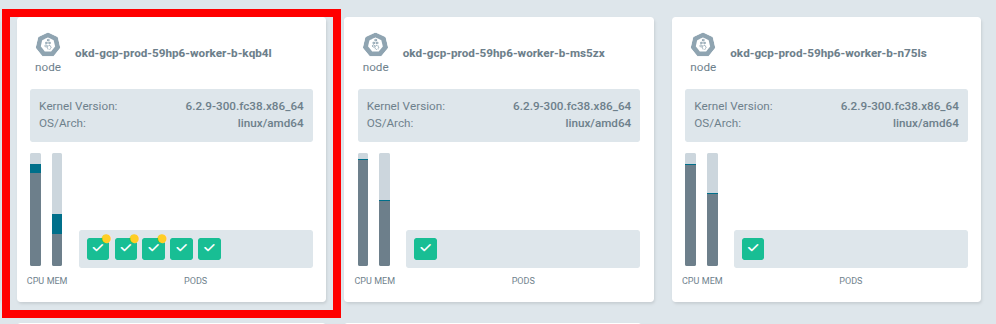
Pods memory usage, n1-standard-32 (32 threads, 120GB RAM)
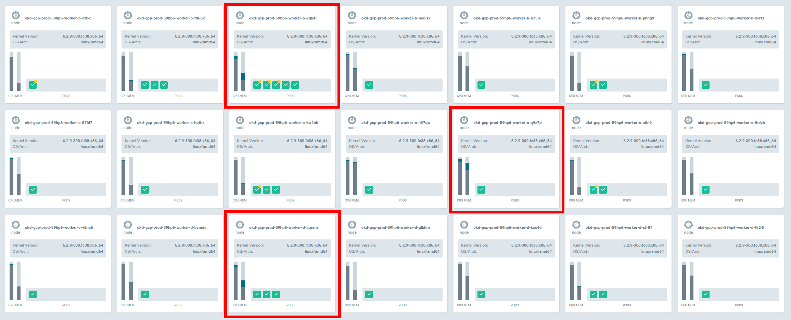
Mongo - indexes
- How to run simple queries without any disk operations.
- Our case: get all SKUs (single field) of active products.
- Data size: 4.5M documents, 30GB uncompressed size (now 45GB)
- We only get about 0.5% of them, ~25k.
{
filter: {"brand": "foo", "store": "bar", "isSaleable": true}
projection: {"sku": true}
}
Mongo - indexes
createIndex({"brand": true, "store": true, "isSaleable": true})
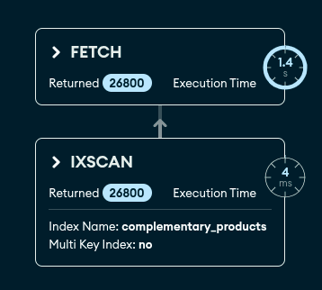
Mongo - indexes
createIndex({"brand": true, "store": true, "isSaleable": true, "sku": true})
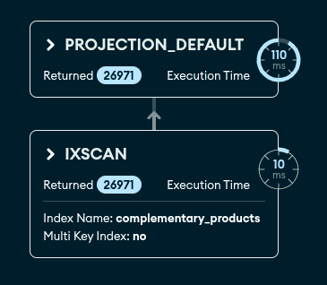
Mongo - indexes
- Index size reduction
- In our case, only ~20% of products are active.
- The rest are archived products, no stock, or new items.
- Mongo allows creating indexes only on part of a collection.
- To use such an index, the query must match the index filter.
- This reduces the amount of RAM needed for indexes.
- Indexes are not updated if the write does not match them.
Mongo - indexes
createIndex(
{"brand": true, "store": true, "sku": true},
{"partialFilterExpression": { "isSaleable": true } }
)
In our case the size reduction is about 10 times
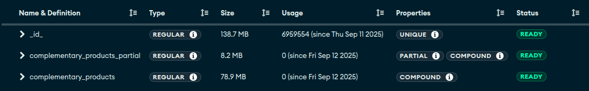
Mongo - in hell
- Why do we need to query and cache thousands of SKUs?
- All recommendations come from an external system as a list of SKUs.
- For each product, we get several vectors, each with 100–1500 SKUs.
- Our system must constantly calculate which SKUs are "buyable".
- Because these lists are random, we can only select them using query IN(...).
Mongo - indexes
Here is an example query that returns active SKUs for a given vector.
"filter": {
"brand": "foo",
"store": "bar",
"isSaleable": true,
"sku": { "$in": ["SKU-0001", ... "SKU-2000"] },
"projection": { "sku" : true}
With a few SKUs in IN(), the query works fine. But with 1000 SKUs in IN(), the query is
not efficient.
Mongo - in hell
- How did we solve this problem?
- A cron job query all “buyable” SKUs and stores the result in Redis.
- From Redis, we sync the list of active SKUs to APCu cache.
- Our system must constantly calculate which SKUs are "buyable".
- When showing recommendations for a product, we get recommendation vectors from
MongoDB.
- Then we use array_intersect to compare both lists.
$validSKUs = array_intersect($similarSKUs, $allValidSKUs);
Mongo - arrrrrrrrrrrrrays
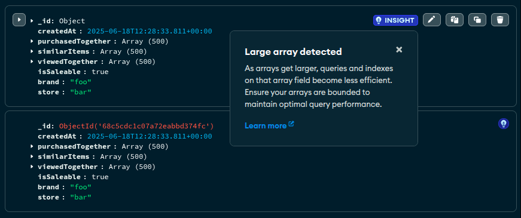
Mongo - arrrrrrrrrrrrrays
- With large arrays, write speed was not good enough.
- This is because whole arrays were updated, not single elements.
- So instead of arrays
{"similarItems": ["SKU-001", "SKU-002",..., "SKU-500"]}
- we used a string field with implode function.
{"similarItems": "SKU-001,SKU-002,SKU-500"}
Bitnami charts
- Starting Aug 28, Bitnami is changing its free container images and Helm charts.
- Before: many free images with versions were available.
- Change: most old images move to Legacy repo (no updates).
- Only a few “community” images stay free (latest only).
- Secure, supported images move to paid Bitnami Secure Images.
- For us: this affects RabbitMQ and Redis containers.
- That's why we prayed that there would be no new security holes in these images.
Bitnami charts
- But apparently we didn't pray enough.
- On October 10, a security flaw appears that allows remote code execution
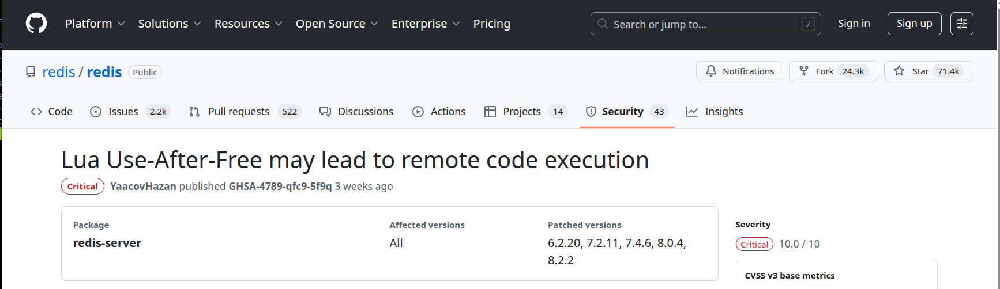
Bitnami charts
- We had two options to solve this problem
- First, using bitnami/redis:latest, but then we lose control of the version used on
the production machine.
- Second, find an image that can be inserted instead of the original bitnami.
- Luckily the official Redis image worked without any changes.
- However, you cannot use the *-alpine version because the bitnami startup script
requires bash.
- Changing the configuration was also simple.
Bitnami charts
A small change in configuration allowed us to continue working
redis:
architecture: replication
image:
registry: internal.docker.proxy
repository: redis #------ this line ----#
tag: 8.2.2-bookworm
...
Costs and results
- Our goal was to keep costs for the largest brand below €2,000 per month.
- Costs were estimated mainly based on similar sized projects
- App: €1500 (php, redis, rabbitmq)
- Database: €550 (mongodb cluster)
- Monitoring and network traffic costs were not estimated
Costs breakdown
PVC
- 64GB for rabbitmq ~€10 x 3 = €30
- 200GB for mongodb ~€32 x 3 = €96
- Total: €130/month
- Total: €0,18/h
Requested CPU during day
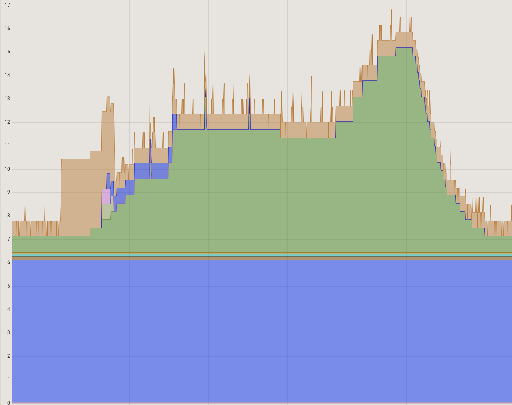
CPU
- Baseline: ~6CPU x €23.5 = €140/m, ~€0.20/h
- Web: 1-10 CPU
- Consumers: 0-5 CPU
- Total:
- min: ~€164/m, ~€0.22/h
- avg: ~€235/m, ~€0.32/h
- max: ~€352/m, ~€0.48/h
Requested RAM during day
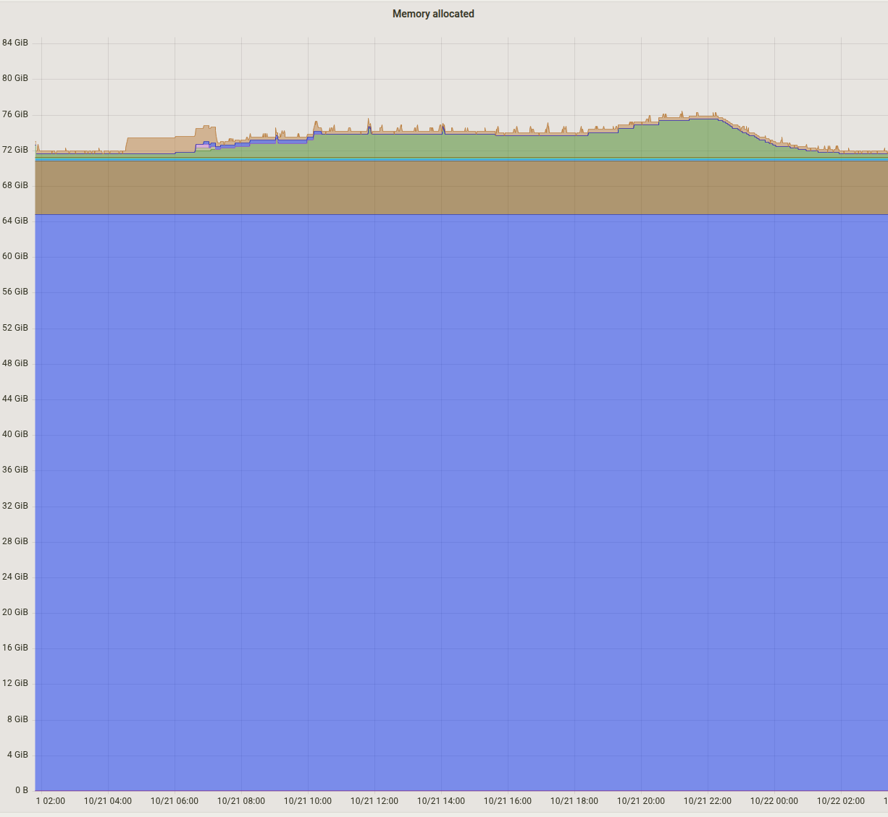
RAM
- Baseline: ~70GB x €3.1 = €217/m, ~€0.30/h
- APP: 1-5GB
- Total:
- min: ~€216/m, ~€0.30/h
- avg: ~€232/m, ~€0.32/h
- max: ~€248/m, ~€0.34/h
Total computing costs
|
CPU (core) |
RAM (GiB) |
CPU/d [€]
|
RAM/d [€]
|
PVC/d [€]
|
Total/d [€] |
Total/h [€] |
Total/m [€] |
| Minimal |
7 |
70 |
5.48 |
7.23 |
4.33 |
17.04 |
0.71 |
512 |
| Avg |
10 |
75 |
7.83 |
7.75 |
4.33 |
19.91 |
0.83 |
598 |
| Max App |
15 |
80 |
11.75 |
8.27 |
4.33 |
24.35 |
1.01 |
731 |
| Max consumers |
25 |
85 |
19.58 |
8.78 |
4.33 |
32.69 |
1.36 |
980 |
Scaling only web app gives minimal savings ~€130 per month.
Greater savings are achieved by scaling consumers ~€380.
Wasted resources
- Even with such aggressive scaling, a lot of resources are still wasted
- Mongodb needs to have plenty of CPU for morning writes
- Rabbitmq requires a minimum of 2 GB RAM to accept data from DS
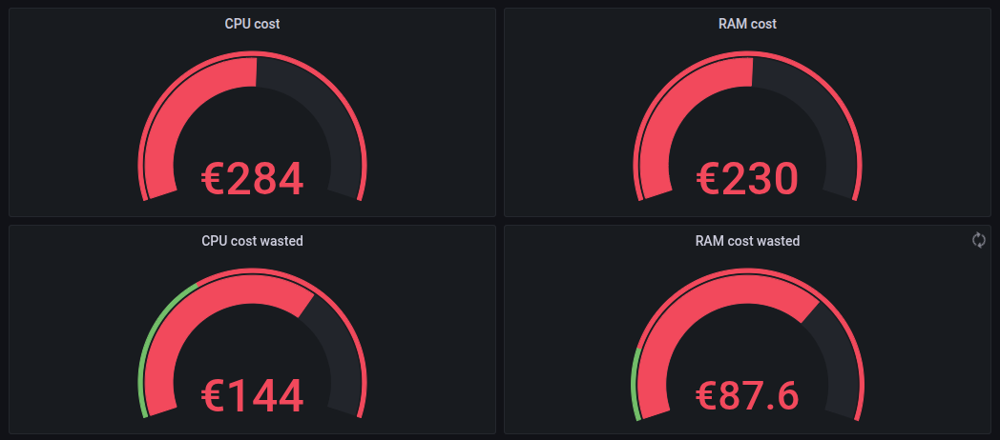
Wasted resources
- Even at the highest load, there are still a lot of unused resources
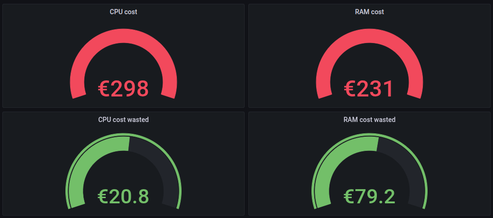
How much do we save at the end of the day?
Nothing
How much do we save at the end of the day?
Here is a chart showing how the number of nodes in the cluster changes during the day
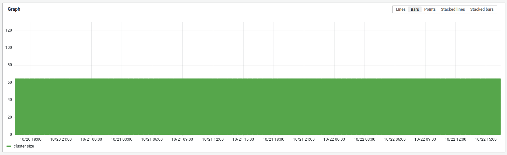
How much do we save at the end of the day?
The same chart but for the whole month
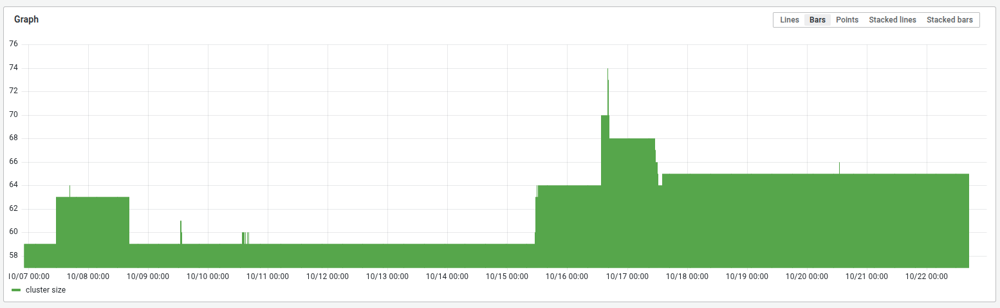
Only 3 times, during the whole month, the cluster decreased
How much do we save at the end of the day?
- And this is really big money
- Each node is an n1-standard-32, 32 CPU, 120G RAM
- Each node cost around ~€1100/m, with my discount ~€777/m
- Total cost: ~€71.5k/m, with discount ~€50k/m
- And this is just one of our three clusters
- You should consider whether it is worth going with k8s, sometimes Compute Engine
with autoscaler is better.
Networking cost
- On an average day, we serve approximately 16.5M recommendations
- Each request is approximately 35kb of data
- This gives us about 560GB of data per day
- And approximately 16TB of data per month.
- 1GiB egress costs around €0.085
- 16TiB costs around ~€1300
- Twice as much as our application cost without any scaling
Networking cost
- How to limit the amount of outgoing data
- By enabling compression for json responses for php
- Configuration is simple and has minimal impact on response time
server {
gzip on;
gzip_vary on;
gzip_min_length 1024;
gzip_comp_level 6;
gzip_types
application/json
...
}
Networking cost
- Compression results:
- Response size from 35kb -> 3.6kb
- Monthly transfer from 16TB -> 1.8TB
- Monthly transfer cost from ~€1300 -> ~€160
- Adding few config lines, we reduced the egress costs by 8x
Does it generate revenue?
Does it generate revenue?
- It took 3 months to prepare the MVP.
- 3 months to complete the AB test in one market and one brand
- Over 3 months of delay. The main problems were:
- Analytics
- Long gaps between mobile app releases
- Constant personnel changes in the team
- Code freeze, holidays, a lot of dependencies
Does it generate revenue?
First attempt - total failure
- There were tree indicators of the project's success
- System maintenance costs less than €2000 euros
- Number of recommendation clicks no worse than 0.5%
- Average revenue per order not less than 0.5%
Does it generate revenue?
First attempt - total failure
- After two weeks of testing, the results were very poor
- Click ration was 14% worse than competition
- But average revenue per order +0.3%.
- System maintenance costs well below €2000.
- The app was able to handle the required traffic.
First attempt - total failure
- Main problem, mobile app was showing only first page.
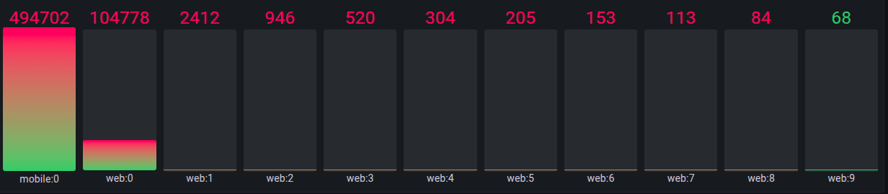
- The cause was a typo in the header name
- It was a simple mistake, but we had to wait two weeks for the next version to be
released.
- Lesson learned: only first page of recommendation is important
Does it generate revenue?
Second attempt - minor failure
- After two weeks of testing, the results were still poor
- Click ration was ok, but user distribution was -3% for Recsio
- Sample Ratio Mismatch (SRM) was not meet, test was not statically correct
- But average revenue per order was again +0.3%.
- Lesson learned, 60 pixels is a lot
Second attempt - minor failure
- All because the event displaying the recommendation was sent at a different time
- The difference was about 60 px
- Fix was easy, but we have to wait for next mobile app release
|
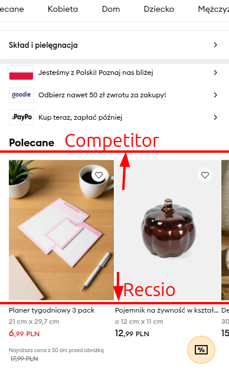
|
Does it generate revenue?
Third attempt - better failure
- We didn't have time to wait for the app to be released, so we decided to only test it on the web.
- Click ratio was ok, but user distribution was +2% for Recsio
- SRM was not meet, test was not statically correct
- But average revenue per order was again +0.3%.
- Lesson learned, sometimes you have to believe that you can do something better than others.
Third attempt - better failure
- The response times of the competing solution were much higher and sometimes the recommendations did not display
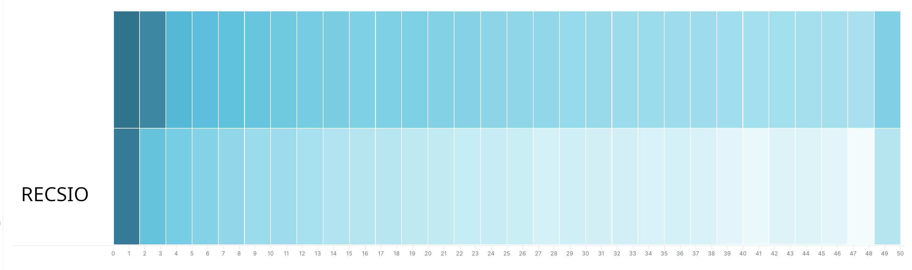
Third attempt - better failure
- The response times of the competing solution were much higher and sometimes the recommendations did not display
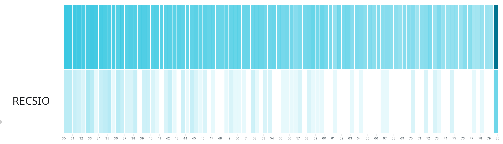
On the mobile apps, this effect was not as visible because the traffic goes through the mobileAPI.
Does it generate revenue?
Final attempt
- As the new app has already been released, we decided to check if the traffic will be distributed correctly.
- Finally good news
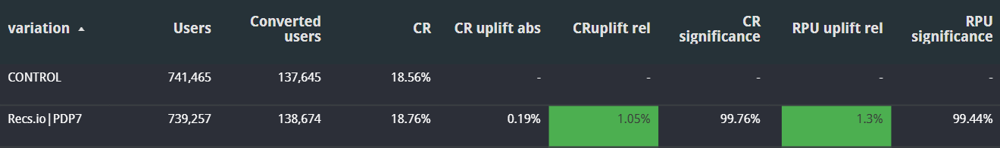
Does it generate revenue?
Final attempt
- We fixed all analytics problems
- We've changed the algorithm to show more similar products
- Finally, SRM was meet, test was statically correct!
- Click ratio was 0.2% better than control
- Revenue Per User +1%
Does it generate revenue?
Final attempt
- But what do all these parameters really mean?
- Average basket value changed by PLN 0.40 (€0.09)
- The results are only for the Android mobile app - about 70% of traffic
- For Android, it is about 19M PLN (€4,5M) more revenue than control
- If web and iOS behave similarly, approx total profit PLN 28M (€6.6M)
Does it generate revenue?
Income that cannot be measured
- First FE app, not released from monorepo (3 deploy windows, 40 min deploy)
- First app, that use advanced auto scaling
- Real-time user event tracking (new in the company)
- Track product popularity in real time (once a day)